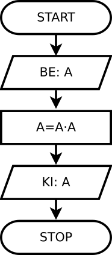
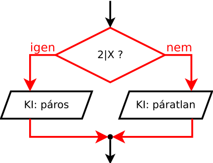
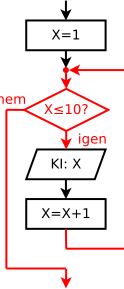
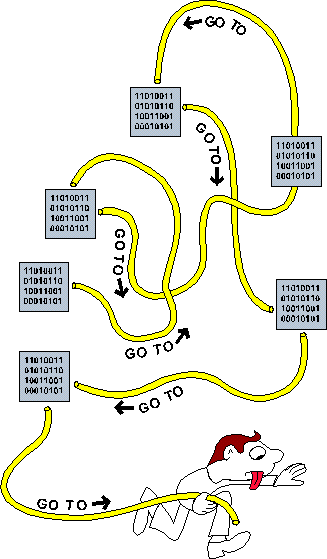

Telefonkönyv
Kit keresünk? Tapsi Hapsi
Száma: 555-125687
Új keresés (i/n)? n
Hogyan lehet olyan programot írni, amely sok adatot tárol és dolgoz fel?
Megváltoztatunk egy cellát a táblázatkezelőben, és újraszámolódik minden, ami kell. Hogyan lehet ezt megcsinálni?
Egyszerű játékok: hogyan működik például egy kukacos játék? Hogyan jegyzi meg, merre halad a kukac?

Amőba játék: mitől tűnik úgy a gép, mintha intelligens lenne? Meg tudod verni a saját amőba játékodat? Meg tudja verni a szobatársad? Meg tudod úgy erősíteni, hogy már ne tudja?! :)
Amikor a tudást, ismeretanyagokat szeretnénk csoportosítani, azt megtehetjük annak „deklaratív” vagy „imperatív” jellege szerint.
Deklaratív tudás
- „Mi az, ami igaz?”
- Állításokat tesz
Imperatív tudás
- „Hogyan kell csinálni?”
- Módszereket ad
Példa: egy szám négyzetgyöke
xgyöke egy olyany,
amirey2=x,
ésy≥0
Deklaratív tudás: egy számról meg tudjuk mondani, hogy egy másik négyzetgyöke-e.
Tippeljük meg, mennyi:
y'.
A tipp javítható:(y'+x/y')/2
Javítgassuk, amíg nem elég jó.
Imperatív tudás: meg tudjuk vele határozni egy tetszőleges szám gyökét.
Az imperatív tudás sokszor hasznosabb. A deklaratív tudás alapján, ha adott
egy y, akkor meg tudjuk mondani, hogy az egy szintén adott
x-nek gyöke-e. De többet nem tudunk mondani. Ennél sokkal jobb az, ha
kapunk egy x-et, és meg tudjuk határozni a hozzá tartozó
y-t!
Az imperatív programozási paradigma lényege: olyan programot kell írnunk, amelyben lépésről lépésre megmondjuk a számítógépnek, hogy mikor mi a teendő. A hangsúly az imperatív nyelvekben a megoldás módján van. A C ilyen, és ebben a félévben ezt a gondolkodásmódot kell megtanulni.
Léteznek deklaratív programozási nyelvek is, amelynél megadjuk, milyenek a helyes megoldások, és a számítógép találja ki a megoldás módját. Ezekkel könnyebb lehet programozni, de a megoldható problémák köre sokkal szűkebb, mint az imperatív nyelvek esetében. Deklaratív programozási nyelv például az adatbázisoknál használt SQL: ebben megadhatjuk, mely adatokra van szükségünk, és a program találja ki, hogyan kell kikeresni azokat az adatbázisból.
A programozásban általában kapunk egy feladatot – egy feladatot pontosan leíró specifikációt. Ez legtöbbször deklaratívan adott. Nekünk kell kitalálni a hozzá tartozó imperatív megoldást, azaz egy módszert, amellyel a bemenetből a kimenet előállítható.
Specifikáció: mit kell csináljon
- Mi lesz a bemenete, mi a kimenete, mi ezek között az összefüggés
- Ez általában deklaratívan adott
és kimenettel
Algoritmus: hogyan csinálja
- A megoldás „lépésről lépésre” leírása: imperatív módon
- Ezt nekünk kell kitalálni.
Nincs rá általános módszer.
Művészet? Tudomány? Mérnöki feladat?
Nincs olyan általános módszer, amely segítségével egy algoritmus szisztematikusan kidolgozható lenne. Vagyis amellyel egy deklaratívan („mi igaz”) adott problémára imperatív („hogyan kell csinálni”) megoldás lenne adható. Hogy ez vajon művészet, tudomány vagy mérnöki feladat, azt nem lehet 100%-osan eldönteni:
- Egyrészről tudomány, ahogyan azt az angol neve is mutatja: computer science. Az algoritmusok kezelhetőek matematikailag. Helyességük bizonyítható, tulajdonságaik (pl. időigény) számszerűsíthetőek.
- Másrészről művészet, hiszen a kidolgozásuk gyakran ötletelésen, felismeréseken múlik. Az egyik leghíresebb programozásról szóló könyv „A számítógépprogramozás művészete” című sorozat (Donald Knuth: The Art of Computer Programming). A címe mindent elmond.
- Harmadrészt mérnöki feladat, éppen annyira, mint egy autót megtervezni. Figyelni kell arra, hogy a részegységek ne zavarják egymást. Irányítani kell a csapatok munkáját, méghozzá úgy, hogy egymástól függetlenül is tudjanak dolgozni. Vannak szabványok, amelyeket követni kell.
A programozás során rengeteg olyan problémával találkozunk, amelyek rendszeresen felmerülnek. Vannak jól bevált megoldások, amelyeket érdemes újra és újra felhasználni. Egy jó programozó bármikor tud mondani többféle módszert is arra, hogyan lehet egy névsort ábécébe rendezni, sőt azt is tudja, mikor melyik módszer a gyorsabb. Ezért sokszor, amikor programozunk, már megtanult algoritmusokat kódolunk csak le.
Hogy néz ki egy ilyen gép belülről? Az alábbi géppel egy szám faktoriálisát lehet kiszámítani. Próbáld ki a gépet: kövesd a használati utasítást!
2. Nyomd meg az A↓1 gombot.
3. Nézd meg, világít-e a lámpa.
Ha igen, ugorj a 7. pontra.
4. Nyomd meg az S↑A gombot.
5. Nyomd meg az N→ gombot.
6. Ugorj a 3. pontra.
7. Kész, az eredmény A-ban.
A gép alkatrészei:
- Nyilak: ezeken mozog az adat.
- Trapéz: a ráírt műveletet végzi. Ha megváltozik a bemenete, akkor a kimenete is rögtön követi.
- Háromszög: konstans számot állít elő.
- Téglalap (regiszter): ez egy számot tárol. Az elé kötött gomb hatására vesz fel új értéket.
- Gomb: beírja a számot abba a regiszterbe, amely felé tőle mutat a nyíl.
- Kör: a belekötött számot vizsgálja, összehasonlítja a beleírt konstans számmal.
- Lámpa: világít, ha az elé kötött feltétel teljesül.
Vegyük észre, hogy nem csak az alkatrészek határozzák meg a működést, hanem a használati utasítás is. Ha nem tartjuk be pontosan, hanem össze-vissza nyomkodjuk a gombokat, akkor a gép értelmetlen dolgot csinál.
A programozásban ilyen gépek szöveges leírását adjuk meg.
algoritmus
Megjegyzett számok: A és N.
Kérj egy számot a felhasználótól: N.
A értéke legyen 1.
Ellenőrzés: Ha N=1, ugorj előre a „vége” címkéhez.
A értéke legyen A·N.
N értékét csökkentsd 1-gyel.
Ugorj vissza az „ellenőrzés” címkéhez.
Vége: Írd ki A értékét.
A szöveges leírás (pszeudokód) tartalmazza:
- A megjegyzett számok listáját: ezek a változók.
- Az elvégzett műveleteket: szorzás, csökkentés.
- A lépések sorrendjét meghatározó utasításokat és döntési pontokat: a vezérlést.
Vagyis mindent, ami az előző dián is volt. Ezzel megadjuk az algoritmust. Vegyük észre, hogy teljesen mechanikusan végrehajtható lépésekről van szó: egyszerű, matematikai jellegű lépéseket végzünk. Szorzást kell elvégezni, egyenlőséget vizsgálni stb.
Algoritmus
Módszer a feladat megoldására.
- Utasítássorozat megengedett lépésekből
- Mechanikusan végrehajtható
- Véges sok lépésből áll
- Mindig egyértelműen adott a következő lépés
- Minden időpontban véges sok memória kell
A papíron összeadás és a prímtényezős felbontás olyan algoritmusok, amelyeket általános iskolában tanítanak. Vegyük észre, hogy mind kimerítik a fenti feltételeket: mechanikusan végrehajthatóak, mindig pontosan definiálják a következő lépést – és valamilyen bonyolult probléma megoldását adják meg úgy, hogy közben egyszerű lépéseket használnak.
175 +343 ──── 518
- „az összes számjegyet”
- „add össze”
- „ha eléri a 10-et, van átvitel”
- …
20│2 10│2 5│5 1│
- „amíg nagyobb, mint 1”
- „ha osztható”
- „írd le az osztót”
- …
/* legnagyobb közös osztó */
int a, b, t;
scanf("%d %d", &a, &b);
while (b != 0) {
t = b;
b = a % b;
a = t;
}
printf("%d", a);A programkódok
- Számítógép által érthető programozási nyelveken
- A nyelv elemeit meg kell tanulni: szótár: szavak, amelyekkel fogalmazunk, szintaxis: a nyelvtani szabályok
Mint mikor angolul vagy németül tanulunk: a számítógép nyelvének elemeit meg kell tanulni.
Programozási nyelv
- A C nyelvet fogjuk használni (Dennis Ritchie, 1972. – ISO C 2011.)
- Ez emberközeli: összetett feladatok oldhatók meg röviden
- De gépközeli is: lehet tudni, „mi van a motorháztető alatt”
A C nyelvet eredetileg Dennis Ritchie fejlesztette ki, 1969 és 1973 között. Azóta több szabványosított változata lett. A jelenlegi változata 2011-ben jelent meg, de az alapjai a kidolgozása óta változatlanok.
A tradicionális első program forráskódja:
program
#include <stdio.h>
int main(void) {
/* üdvözlet */
printf("Helló, világ!\n");
return 0;
}Helló, világ!
printf() – kiírás
visszaper
(backslash)
printf(): kiír valamit"szöveg": a szöveg (karaktersorozat) idézőjelben. A gép nem keres benne értelmet- Vagy mégis?
\n: új sort kezd (ha idézőjelet szeretnénk kiírni, az\"lenne, hogy meg tudja a gép különböztetni a szöveg végét jelző idézőjeltől) - A
printf()-nek adott szöveget, ún. paramétert zárójelbe (parenthesis) kell tenni ;pontosvessző: utasítás vége
/* üdvözlet */ – megjegyzések
/* */: megjegyzés (comment)- A gép nem foglalkozik vele, magunknak írjuk
- Olvashatóvá, követhetővé tehetjük a programot
return 0; – programrész vége
return: vége ennek a programrésznek0itt azt jelenti, hogy rendben, hiba nélkül- később részletesen beszélünk majd erről
{ } – utasításblokk
{ }: kapcsos zárójel (curly bracket, brace) utasításblokk eleje és vége- ezzel jelezzük, mettől meddig tart
- jellegzetes C-s, rengeteg nyelv átvette
int main(void) – főprogram
main: a főprogram neve- később a programjainkat kisebb részekre bontjuk, most csak a főprogram van
intés(void): ezekről is később lesz majd szó
#include <stdio.h> – előre megírt programrészek
kettőskereszt
hash mark
#include: beillesztjük- kacsacsőrök között
stdio.h: helyettünk megírt programrészek, amelyeket a C tartalmaz. Jelen esetben a kiírás:printf().
Előre megírt programrészek: nekünk nem kell vele foglalkozni, hogy mi lesz a kiírt betűkkel. Számunkra ez a program kimenete; hogy az hogyan jut el a képernyőig, az már nem a mi dolgunk.
#include <stdio.h>
int main(void) {
printf("Eredmény: %d.\n", 2*3);
return 0;
}A printf() nem csak egy egyszerű szöveget tud kiírni, hanem akár egy matematikai kifejezés értékét is. A
szövegben elhelyezett %d helyére behelyettesíti a kiírásban a megadott műveletsor értékét. Jelen esetben ez egy
egész számokkal végzett művelet. A program egy nagyon egyszerű számológép C-ben: a 2*3 helyére bármilyen
matematikai kifejezést beírhatunk (persze a C nyelvtani szabályainak megfelelően), és a program futtatása után
megkapjuk az eredményt.
Mi az a változó?
Egy eltárolt, megjegyzett érték, amelynek nevet adunk.
- Másképpen: egy hely neve, ahol egy értéket tárolunk.
- Egy változó egy dolgot jegyez meg, ezért minden megjegyzett dologhoz külön változó kell.
- A programnak időbeliséget adnak: miattuk számít a műveletek sorrendje!
X értéke legyen 5. értékadás (írás) Leírom X-et. kiértékelés (olvasás): „5” X értéke legyen X+1. kifejezés kiértékelése, aztán értékadás Leírom X-et. ez „6” lesz (időbeliség!)
Mit lehet csinálni egy változóval?
A változókban tároljuk a programunk által megjegyzett adatokat, részeredményeket.
- Kiértékelés
- Egy változóban tárolt adatot előveszünk, „olvassuk”.
- Értékadás
- Egy változóban új adatot jegyzünk meg, „írjuk”. A régi értéke ilyenkor elveszik!
A program futása során, egyes időpontokban más lehet az értékük: ugyanaz a művelet más eredményt
adhat egy másik pillanatban. Emiatt fontossá válik a műveletek sorrendje. Fontos gondolat, hogy ez az értékadás miatt
van. Ha nem létezne értékadás, akkor ez nem lenne így. Például az alábbi képletben teljesen mindegy, hogy melyik tényező értékét
számítjuk ki előbb: (3+4)×(6-9)×(12-4-6+5). Haladhatunk balról jobbra, jobbról balra, vagy akár kezdhetjük a
középső 6-9-cel is. Ezzel szemben a fenti programkódban láthatóan számít az, hogy a növelés előtt vagy után írjuk le az X
változó értékét. A faktoriálist számító gépnél is számított az, hogy milyen sorrendben nyomjuk meg a gombokat.
Típus
Az értékkészlet és a műveletek együttese.
- A változóknak is van típusa – ez adja meg az értékkészletet és a végezhető műveleteket is.
- A típusok szinte minden programozási nyelvben megtalálhatóak.
| típus | értékkészlet | műveletek |
|---|---|---|
| egész | -1, 2, 5, … | összeadás, kivonás, összehasonlítás |
| valós | 1.5, 7, 3.14, … | összeadás, kivonás, összehasonlítás |
| logikai | igaz, hamis | és, vagy, tagadás |
| karakter | betűk, írásjelek, … | összehasonlítás, következő, előző |
| szöveg | karaktersorozatok | összefűzés, keresés |
Kifejezések és típusok
| kifejezés | érték |
|---|---|
| 1+2 | 3 |
| 5+2*3 | 11 |
| 6*(3+4) | 42 |
| kifejezés | érték |
|---|---|
| 1<2 | igaz |
| 2≥3 | hamis |
| 'a' < 'b' | igaz |
| kifejezés | hiba |
|---|---|
| 3*(1+ | vége? |
| 1-HAMIS | típus! |
| 1<X<5 | típus! |
A műveletek adott típusokon végezhetőek el, és az eredménynek is van valamilyen típusa. Ezek azonban nem feltétlenül ugyanazok. Például egy szám+szám művelet eredménye is szám, de egy szám<szám összehasonlítás logikai, igaz/hamis típusú eredményt ad. Lehetséges az is, hogy egy művelet két operandusának típusa sem egyezik meg: időpont+időtartam→időpont. Pl. 12:15+30 perc=12:45.
A kifejezésekről
- Tartalmazhatnak változókat és konstansokat (állandókat) is
- Meg kell feleljenek a nyelvtani szabályoknak
- Fontos a típus, hogy értelme legyen egy kifejezésnek!
- Ha X egy szám, X+3 értelmes.
- Ha X szöveg, X+3 értelmetlen.
A kifejezés értelmességéhez, helyességéhez szükséges az is, hogy az egyes műveleti jelek (operátorok)
mellett megfelelő típusú operandusok legyenek. Az 1-HAMIS kifejezés hiába tűnik helyesnek nyelvtanilag (a mínusz
jel mindkét oldalán egy érték van), mégis értelmetlen, mert egy egész számból nem lehet kivonni egy logikai értéket. Ugyanígy,
bár matematikában gyakran rövidítjük az „X 1-nél nagyobb, és X 5-nél kisebb” gondolatot az 1<X<5
kifejezéssel, a legtöbb programozási nyelvben ez nem működik. Gondoljunk csak bele, mi történik akkor, ha a két „kisebb, mint”
< operátort megpróbáljuk szigorúan két operandusú műveletekként, külön-külön értelmezni: (1<X)<5
értelmetlen, mert logikai<egész kifejezéshez vezet; a 1<(X<5) pedig értelmetlen, mert
egész<logikai kifejezéshez vezet.
Definíció (létrehozás)
int x = 2; // x egész
int a, b;
int kerulet, terulet;Létrehozás: x egy egész szám.
- A változóinknak nevet adunk, ezeknek betűvel kell kezdődniük, és nem lehet bennük ékezetes betű
- Megmondjuk a gépnek a változó típusát és nevét, innen tudja a gép, hogy van egy új név, és hogy az mit jelent
int: egész szám neve C-ben (integer)
Használat
x = 3; // x legyen 3
x = 2+3;
x = x+1; // x nőjön eggyelÉrtékadás: x elfelejti régi értékét, és mostantól ezt tárolja.
x=5 x=x+1 x=5+1 x=6
=az értékadás művelet jele C-benx=x+1: nem egyenlet, hanem értékadás- „x legyen egyenlő x pillanatnyi értéke +1-gyel”
Egy változónak adhatunk kezdeti értéket (rögtön a definíciójakor). Ezt inicializálásnak is hívjuk. A változókat nem kötelező inicializálni, azonban figyelni kell arra, hogy ne használjuk az értéküket addig, amíg nem adtunk nekik először.
Kiírás
csillag
(asterisk)
int x;
x = 2*3;
printf("Értéke: %d.\n", x);Értéke: 6.
- a szorzás jele a
*, nem a· %d: egy egész számot szeretnénk kiírnid, mert „decimális”, tízes számrendszerben- a
%dhelyére a változó értéke kerül, és úgy jelenik meg
Beolvasás
„et” vagy „és”
(ampersand)
int szam;
printf("Mennyi? ");
scanf("%d", &szam);Mennyi?
scanf(): beolvasás"%d": egy egész számot&kell a változó neve elé, ennek okáról majd részletesen lesz szó
Bár a printf() és a scanf() használata formailag
szinte megegyezik, fontos észben tartani, hogy a printf()
csak kiírni, a scanf() pedig csak beolvasni tud!
Emiatt ez helytelen:
scanf("Mennyi? %d", &x);Vannak statikusan és dinamikusan típusos programozási nyelvek. A C nyelv statikusan típusos: minden változót definiálnunk kell, előre meg kell mondanunk a típusát.
A definíción kívül sok más helyen is figyelnünk kellhet a változók típusára. Pl. a
kiírásnál és a beolvasásnál is: a printf() a valós, vagyis double típusú számhoz
%f-et vár, míg a scanf() %lf-et. Vigyázni kell: nem biztos, hogy a gép
figyelmeztet minket, ha ezeket rosszul használjuk!
| művelet | egész | valós |
|---|---|---|
| létrehozás | int n; | double x;
|
| kiírás | printf("%d", n); | printf("%f", x);
|
| beolvasás | scanf("%d", &n); | scanf("%lf", &x);
|
A dinamikusan típusos nyelvekben a változóknak nem kell előre megadni a típusát, sőt egy adott nevű változó típusa is változhat a program futása közben. Az ilyen nyelveknek persze nem az a célja, mint a C-nek, hogy számítógépközeli, gyors, jól optimalizálható programokat lehessen írni velük.
Feladat: írjunk programot, amely megkérdezi a felhasználót, mekkora egy kör sugara, majd kiírja a kör kerületét és területét!
Ez az első interaktív programunk, amely nem csak kiír valamit, hanem kérdez is a felhasználótól – sőt az eredmény a felhasználó által adott bemenő adattól függ.
A megoldás algoritmusa: követjük az események sorrendjét:
- Megkérdezzük a felhasználót, mekkora a kör.
- Megvárjuk, amíg válaszol (és megjegyezzük a választ).
- Kiírjuk a kerületet és a területet.
(Vagy épp másképp is megközelíthetjük: ahhoz, hogy kiírjuk az eredményt, előbb a bemenő adatokra van szükségünk. Anélkül úgysem menne. Az adatok beolvasása előtt pedig feltesszük a kérdést, mert később már nem lenne értelme.)
A kör sugarát a sugar nevű változóban tároljuk. Azért kell
eltárolni, mert a billentyűzetről beolvasott értékre a programban több helyen is hivatkozunk:
egyrészt akkor, amikor jelezzük, hogy hova kell beolvasni; másrészt a kerület kiszámításakor;
harmadrészt a terület kiszámításakor.
pi=3.14;a programban
tizedespont,
nem vessző!
#include <stdio.h>
int main(void) {
double sugar;
printf("Mennyi a kör sugara? ");
scanf("%lf", &sugar);
printf("Kerülete: %f, területe: %f.\n",
2*sugar*3.1416, sugar*sugar*3.1416);
return 0;
}Mennyi a kör sugara? 4.5 Kerülete: 28.274400, területe: 63.617400.
A változóra azért is szükségünk van, mert a scanf() csak egy
változóba tudja tenni az eredményt. A kiszámolt kerületet és területet is tehettük volna egy
másodikba és egy harmadikba (pl. double kerulet, terulet;), de azokat nem akartuk
többször használni, és a printf() pedig nem csak egy változó, hanem egy kifejezés
értékét is át tudja venni kiírásra.
Fontos, hogy mindig értelmes nevet adjunk a változónak,
amely utal a szerepére. Ez megkönnyíti a programkód olvasását. Itt jó lenne még az r
név is, de az xx vagy az a1 már nem igazán.
Elemi lépések, műveletek a számítógépen
- Kiírunk valamit a képernyőre
- Adatot kérünk a felhasználótól
- Kiszámolunk valamit
- Értéket adunk egy változónak
- …
PROGRAM
KIÍR: "Helló, világ!" egyetlen elemi lépés
PROGRAM VÉGE
A legegyszerűbb program egyetlen elemi lépésből áll, egyetlen tevékenységből. Az egy lépésből megoldható feladatoknál persze szinte mindegyik bonyolultabb. Ha több lépésünk van, meg kell mondanunk, milyen sorrendben szeretnénk azokat a lépéseket elvégezni.
Mit csinál a program?
- A program kifejezésekkel kiszámol értékeket.
- Ezeket eltárolhatja változókba vagy kiírhatja a kimenetére.
- A számítások sorrendjét a vezérlési szerkezetek adják meg.
3211│13 247│13 19│19 1│
Például egy prímtényezős felbontás algoritmusában nem mondhatjuk azt, hogy „oszd el a számot a legkisebb prímszámmal”. Legalábbis amíg nem mondtuk meg azt, nem raktuk össze kiértékelésekből és értékadásokból, hogy hogyan lehet megkeresni a legkisebb prímszámot, ami osztja a bal oldalit.
Folyamatábra
Program
PROGRAM KIÍR: "Kérem a számot!" BEOLVAS: a a = a·a KIÍR: a PROGRAM VÉGE
Működés
a:
Mire használjuk itt a változót? Arra, hogy megjegyezzük a felhasználótól származó értéket – és később a négyzetét.
A programok vezérlési szerkezetét grafikusan is megadhatjuk. A folyamatábra és a struktogram ennek két elterjedt módja. A folyamatábrán a nyilak mutatják a lépések sorrendjét.
Feladat: Írjunk programot, amely kér egy számot a felhasználótól.
Mondja meg, hogy páros-e vagy nem.
A programsorok végrehajtása feltételhez (igazságértékhez) köthető.
Folyamatábra
Program
PROGRAM BEOLVAS: szam HA szam/2 maradéka 0, KIÍR: "páros" ha igen EGYÉBKÉNT KIÍR: "páratlan" ha nem ELÁGAZÁS VÉGE PROGRAM VÉGE
Működés
szam:
A szám/2 maradékának vizsgálata után a program végrehajtása az elágazás igaz vagy hamis ágában folytatódik. Így a kettő közül mindig csak az egyik felirat íródik ki.
- Elágazás (conditional)
- Az egész vezérlési szerkezet, amelyben egy bizonyos programrészlet végrehajtását feltételhez köthetjük.
- Feltétel (condition, predicate)
- A logikai kifejezés, amelynek igaz/hamis voltától függ, hogy végrehajtódik-e az adott programrészlet. Ez egy ún. igazságértékre alapozott választás.
- Igaz ág, következmény (consequent)
- Az a programrészlet, amely akkor hajtódik végre, ha a feltétel igaz volt.
- Hamis ág, „else” ág (alternative)
- Ez akkor hajtódik végre, ha a feltétel hamis volt.
if (feltétel) feltétel: zárójelben
utasítás;
[ else
utasítás; ]
egyenlő-e
maradék
#include <stdio.h>
int main(void) {
int szam;
printf("Írd be a számot!\n");
scanf("%d", &szam);
if (szam % 2 == 0)
printf("Páros.\n");
else
printf("Páratlan.\n");
return 0;
}Figyeljünk meg két dolgot a fenti kód szintaktikáján, azaz a C nyelvtani szabályain! Egyik az, hogy az elágazás feltételét zárójelbe kell tenni. Erre azért van szükség, mert az igaz ágban lévő utasítást nem vezeti be semmilyen kulcsszó: a bezáró zárójel után rögtön a végrehajtandó művelet jön. Másik pedig, hogy ezen a helyen nincsen pontosvessző sem: a „ha ... akkor ...” egyetlen mondatnak számít.
Feladat: írjunk programot, amelyik kiírja a számokat 1-től 10-ig.
:-(
KIÍR: 1 KIÍR: 2 KIÍR: 3 … KIÍR: 8 KIÍR: 9 KIÍR: 10
Problémák
- Kipontozás? Ez nem szép megoldás.
- Mi van akkor, ha a felhasználó kell megmondja pl. a felső határt? A program forráskódja nem függhet a bemenetétől!
Ciklus (loop): programrész ismétlése, amíg egy feltétel fennáll.
Folyamatábra
Program
PROGRAM KIÍR: "Meddig írjam ki?" BEOLVAS: n x = 1 CIKLUS AMÍG x ≤ n KIÍR: x x = x+1 CIKLUS VÉGE KIÍR: "." PROGRAM VÉGE
n: x:
Itt mire jó a változó? Azzal tudjuk elérni azt, hogy a ciklus törzsében lévő kiírás utasítás mindig más számot írjon a képernyőre! Azzal számoljuk, hogy éppen hol tartunk.
- Ciklusmag, ciklustörzs (loop body)
- Az ismételt utasítás(ok). Itt a
KI: Xés azX=X+1. - Ciklusfeltétel (loop condition)
- A kifejezés igaz/hamis értéke alapján eldől, hogy végrehajtódik-e a ciklus törzse. Itt az
X≤10. - Elöltesztelő ciklus (pre-test loop)
- A feltételt a ciklustörzsbe lépés előtt ellenőrizzük.
- Iteráció (iteration)
- A ciklustörzs egy végrehajtása a program futása közben.
- Ciklusváltozó, iterátor (iterator)
- A ciklust vezérlő változó, ha van ilyen (ebben a példában az
X).
ciklus
while (feltétel)
utasítás;
#include <stdio.h>
int main(void) {
int n;
printf("Meddig írjam ki?\n");
scanf("%d", &n);
int x = 1;
while (x <= n) { // több utasítás: { } között
printf("%d ", x);
x = x+1;
}
printf(".\n");
return 0;
}Ha a ciklustörzsben több utasítás is van, az egy szekvencia, ami C-ben utasításblokként jelenik meg. Ezért kellenek a kapcsos zárójelek. Ha csak egyetlen utasítás van, akkor nincsen rájuk szükség, de nem is hiba kiírni őket.
Ciklusfeltételek
- A ciklus bennmaradási feltétele logikai kifejezés
- Újra és újra kiértékelődik minden iterációban
- Ha teljesül, végrehajtódik a törzs, ha nem, a ciklus után folytatódik a program
Hányszor hajtódnak végre?
- Ahányszor a feltétel teljesül.
- Ez lehet 0 is: a törzs egyszer sem hajtódik végre
- A feltétel előbb-utóbb hamissá kell váljon, különben végtelen ciklus (infinite loop) keletkezik
A feltétel hamissá kell váljon előbb-utóbb: praktikusan ez azt is jelenti, hogy a ciklusváltozónak, ha van, az egyes iterációk között változnia kell. Különben ugyanaz marad az értéke, és a ciklus feltételének igazságértéke sem fog változni! Ha nincs olyan utasítás a ciklusban, amely a ciklusváltozó értékét változtatja, az gyanús.
Feladat: számok kiírása 1-től 10-ig.
int i = 1;
while (i <= 10) {
printf("%d\n", i);
i = i+1;
}int i = 0; // :(
while (i <= 9) { // :(
i = i+1;
printf("%d\n", i); // :(
}Ha áttekinthetően szeretnénk ciklust írni, akkor érdemes a bal oldalt látható sémát megtartani. Az ismérvek:
- A ciklus előtt közvetlenül a ciklusváltozó inicializálása szerepel. Ez lesz az első iterációban az értéke, tehát ez az első feldolgozott elem.
- A ciklustörzsben elöl a teendők szerepelnek. Mivel ez elöl van, ezért a ciklusváltozó értéke az első iterációban éppen a cikluson kívül beállított érték, vagyis az első elem! (Különben a ciklusváltozót olyan értékre kellene inicializálni, amit aztán nem dolgozunk fel, ahogyan az a jobb oldalon is látszik.)
- A ciklustörzs végén az utasítás, amely lép a következő elemre. Ez változtatja a ciklusváltozót. Utána már nem írunk semmit, hiszen akkor egy iteráción belül némely utasítások még a régi, némelyek pedig már az új értékére vonatkoznának.
„Amíg” (while) ciklus
i = 1
CIKLUS AMÍG i ≤ 10
KIÍR: i
i = i+1
CIKLUS VÉGE
int i = 1;
while (i <= 10) {
printf("%d ", i);
i = i+1;
}Számlálásos ciklus
CIKLUS i = 1-től 10-ig +1-esével
KIÍR: i
CIKLUS VÉGE
for (int i = 1; i <= 10; i = i+1) {
printf("%d ", i);
}
„for every value of x from (x=1; to x<=5; step by x=x+1)”
– Harold Abelson, Gerald Jay Sussman
Nagyon gyakori ez a fordulat: „i minden értékére… 1-től 10-ig 1-esével… csináljuk ezt…”
Ezért erre külön nyelvi eszköz van, a for() ciklus. Működésében a számlálásos ciklus nem különbözik az eddig megismert
elöltesztelő ciklustól; minden számlálásos ciklus átírható ilyen formára. Az áttekinthetőség, olvashatóság miatt használjuk a
számlálásos ciklust. Rávezet arra, hogy már a ciklusfej leírásakor átgondoljuk: honnan, hova, milyen lépésközzel szeretnénk
eljutni.
A for() ciklus fejlécében a kezdeti érték helyén új változót is hozhatunk létre, tehát ott nem csak szimpla
értékadás, hanem változódefiníció is szerepelhet. Az így létrehozott változó csak annak a for() ciklusnak a
belsejében létezik, amelyben definiálva lett.
Érdekesség: Harold Abelson az MIT egyetem professzora, a Creative Commons és a Free Software Foundation alapítványok egyik alapító tagja. (Az utóbbi alapítványhoz tartozik a GNU projekt, amely keretében a Linux rendszert is fejlesztik. Ez az androidos okostelefonok alapja.) Társszerzője a Structure and Interpretation of Computer Programs könyvnek, amelyből a fenti gondolat is származik.
Strukturált programok (structured programs)
- Amelyek szekvenciából, elágazásból és ciklusból épülnek fel
- Matematikailag bizonyított: minden számítógéppel megoldható feladat megoldható így!
| szerkezet | használat | pszeudokód |
|---|---|---|
| szekvencia | Egymás utáni utasítások. | utasítás1 utasítás2 utasítás3 |
| elágazás | Feltételhez között végrehajtás. 0-szor vagy 1-szer. | HA feltétel, AKKOR utasítás ELÁGAZÁS VÉGE |
| ciklus | Ismétlés. 0-tól ∞-ig akárhányszor. | CIKLUS AMÍG feltétel utasítás CIKLUS VÉGE |
Programvezérlés (control flow)
Az utasítások végrehajtásának sorrendje.
- Alapvetően egymás után, de ez megváltoztatható vezérlési szerkezetekkel (control structure).
- Speciális programbeli utasítások tartoznak hozzájuk: ezek a vezérlésátadó utasítások (control flow statement).
A vezérlési szerkezetek lényege az, hogy valamilyen döntés (egy feltétel teljesülése) alapján máshol folyatódik általuk a program végrehajtása – nem a pszeudokódban következő utasításnál.
A gyakorlaton spagetti kódot írtunk, ide-oda ugráltunk a kódban. Ettől áttekinthetetlen lett a program!
A spagetti kóddal az a baj, hogy az ugrásoknál sose tudni, mire valók, mi a céljuk. Elágazást szeretnénk, elvégezni egy műveletet vagy átugrani, kihagyni? Vagy azért ugrunk valahova, mert meg szeretnénk ismételni valamit? Folyton keresgélni kell a kódban, hogy előre vagy hátrafelé ugrunk, beleugrunk egy műveletsor belsejébe, kiugrunk belőle, megszakítva azt.
A vezérlési szerkezeteknek az is az értelme, hogy jelezni tudjuk, miért ugrunk, mire használjuk az ugrást. Amikor visszaugrunk egy pontra a programban, általában azért tesszük, hogy megismételjünk egy műveletet, műveletsort. Ha előrefelé, azt pedig azért, hogy kihagyjunk egy műveletet, hogy feltételhez kössük annak végrehajtását. Különböztessük meg ezeket, rendeljünk ezekhez különálló vezérlésátadó utasításokat! Ha így teszünk, sokkal érthetőbb lesz a programunk.
#include <stdio.h>
int main(void) {
for (int y = 1; y <= 5; y = y+1) {
for (int x = 1; x <= 5; x = x+1)
printf("%3d", x * y);
printf("\n");
}
return 0;
}Példa: a szorzótábla kirajzolása két ciklussal. Kívül a sorok ciklusa
(y, öt iteráció), és azon belül soronként öt szám (x, öt iteráció
soronként) és egy újsor karakter. Az x változó csak a belső ciklushoz van, így azt
érdemes belül definiálni, mert csak ott használjuk.
A lenti szakkifejezéseket nagyon gyakran fogjuk használni, amikor forráskódokról beszélünk.
| Név | Példa | Használat |
|---|---|---|
| kulcsszó (keyword) | int, double, return | a nyelv része, valamilyen speciális jelentése van |
| azonosító (identifier) | x, terulet | valami neve, pl. változóé |
| operátor (operator) | * + / | számítási művelet |
| blokk (block) | { } | több utasítás, csoportosítás |
| megjegyzés (comment) | /* */ | programozóknak szóló, megértést könnyítő szöveg |
| szám (numeric) | 12, 6.0e23 | egész és valós számok |
| sztring (string) | "helló, világ\n" | szöveg |
A nyelvtan leírása
Érdemes tudni róla (a tananyagon ez túlmutat), hogy a programozási nyelvek nyelvtani szabályait formálisan is rögzíteni szokták. Egyik nyelv, amivel nyelvtani szabályok leírhatók, az ún. EBNF, Extended Backus-Naur Form. Ennek jelölései a következők:
| Jelölés | Jelentés | Példa |
|---|---|---|
| = | definíció | névelő = 'egy'; |
| ; | definíció vége | |
| ' ' | szöveg | |
| | | „vagy” | számjegy = '0' | '1' | … |
| , | összefűzés | negatív = '-', szám; |
| [ ] | elhagyható | pozitív = ['+'], szám |
| { } | ismétlés | szó = betű, { betű }; |
Példaként a pozitív egész szám nyelvtani szabályainak leírása EBNF-ben:
szám = nemnulla, { számjegy };
nemnulla = '1'|'2'|'3'|'4'|'5'|'6'|'7'|'8'|'9';
számjegy = '0' | nemnulla;
- Akárhány számjegyből állhat, nem kezdődhet nullával.
- Helyes: 98, 54079, 43, 1, 112.
- Helytelen: 1ax, abcd, s98, 012.
EBNF leírást használnak a programozók is, akik egy nyelvet használnak, és szintaxisát szeretnék megérteni. De ebből dolgoznak azok is, akik a fordítóprogramot írják: ha matematikai precizitással adottak a nyelvtani szabályok, akkor a nyelv minden mondatát könnyű értelmezni. A C nyelv összes nyelvtani szabálya kb. 5 oldalnyi EBNF-fel leírható.
Másik elterjedt jelölés a szintaxisgráf. Ez nagyon szemléletes, azonnal látszik is rajta, hogyan kell értelmezni. A C nyelv változódefinícióinak (egyszerűsített) szintaxisgráfja így néz ki:
int i;
int x = 0, y = 0, z = 0;
double pi = 3.14, r;#include <stdio.h>
int main(void) {
│ for (int y = 1; y <= 5; y = y+1) {
│ │ for (int x = 1; x <= 5; x = x+1)
│ │ printf("%3d", x * y);
│ └─ printf("\n");
│ }
│
└─ return 0;
}Figyeljük meg:
- A kód tördelése. Az egyes vezérlési szerkezetek belsejében
lévő utasítások beljebb kezdődnek (indent). A programon
belüli utasítások is, ahogyan az
if-en belüliek és a cikluson belüliek is. Ez nagyban megkönnyíti a program áttekintését. - A kapcsos zárójelek
{}használata. Ha egy vezérlési szerkezeten belül csak egy utasítás van (mint pl. azifigaz ágában vagy a ciklusban), akkor nem szükséges köré kapcsos zárójelet tenni. Azonban nem is lenne hiba sem, sőt talán attól is áttekinthetőbb kicsit a program. (Sokan azt vallják, jobb úgy használni.) A szintaktikai szabályok bemutatása miatt a fenti program a minimális számú kapcsos zárójelet tartalmazza.
Hogy ki pontosan hova helyezi el a nyitó és záró kapcsos zárójeleket, hova tesz szóközöket a műveleti jelek köré stb. – ez ízlés kérdése. Rengeteg stílus alakult ki, amelyek közül a tananyagban az ún. K&R stílust fogjuk használni. (Persze itt-ott ettől eltérünk, főleg ha ezt az előadásban a dia szűkös mérete kényszeríti.) Ezt a stílust tréfásan egyiptomi zárójelezésnek is szokták nevezni, a kapcsos zárójelek elhelyezése miatt.